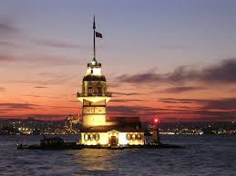

Yahya Kemal'den
Git bu mevsimde, gurub vakti, Cihangir`den bak!
Bir zaman kendini karşındaki Rüyaya bırak!
Başkadır çünkü bu akşam bütün akşamlardan;
Güneşin vehmi saraylar yaratır camlardan;
O ilah isteyip eğlence hayalhanesine,
Çevirir camları birden peri kasanesine.
Som ateşten bu saraylarla bütün karşı yaka
Benzer üç bin sene evvelki mutantan sarka.
Mestolup içtiği Altın şarabın zevkinden
Elde bir kırmızı kaseyle ufuktan çekilen
Nice yüz bin senedir şarkın ışık mimarı
Böyle ma`mur eder ettikçe hayal Üsküdar`ı.
O ilahın bütün ilhamı fakat anidir;
Bu ateşten yaratılmış yapılar fanidir;
Kaybolur hepsi de bir anda kararmakla batı.
Az sürer gerçi fakir Üsküdar`ın saltanatı;
Esef etmez güneşin şimdi neler yıktığına;
Serviler şehri dalar kendi iç aydınlığına,
Ezeli mağfiretin böyle bir ikliminde
Altının göz boyamaz kalbi kadar halisi de.
Halkının hilkati her semtini bir cennet EDEN
Karşı sahilde karanlıkta kalan her tepeden,
Gece bir çok fukara evlerinin lambaları
En sahih aynadan aksettiriyor Üsküdar`ı.
